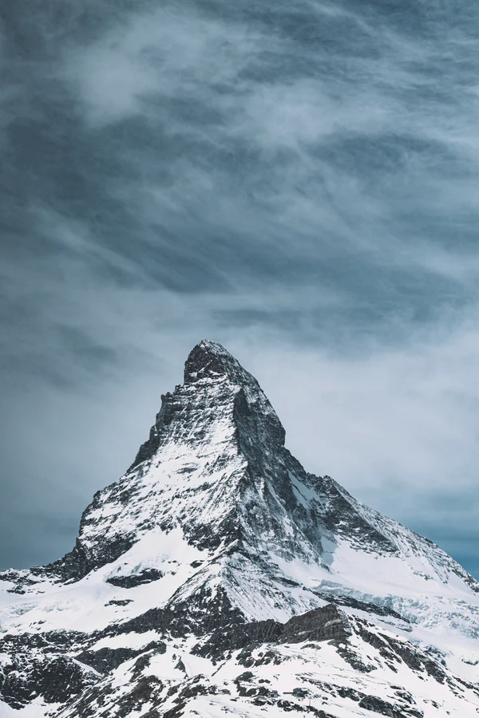
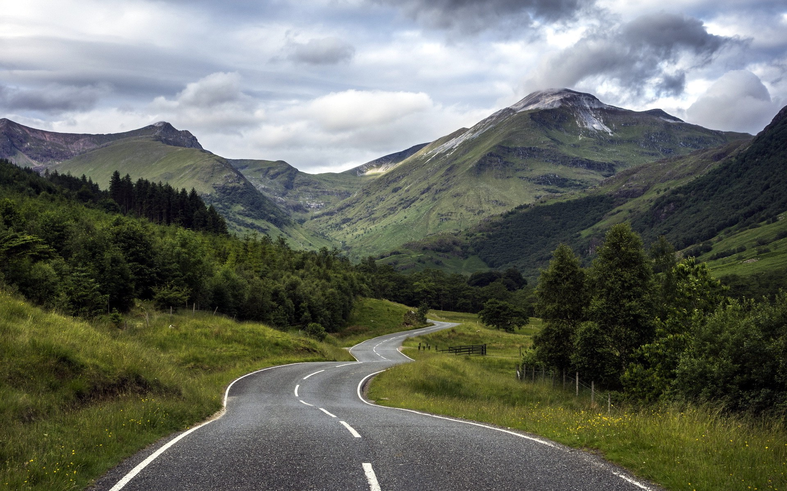
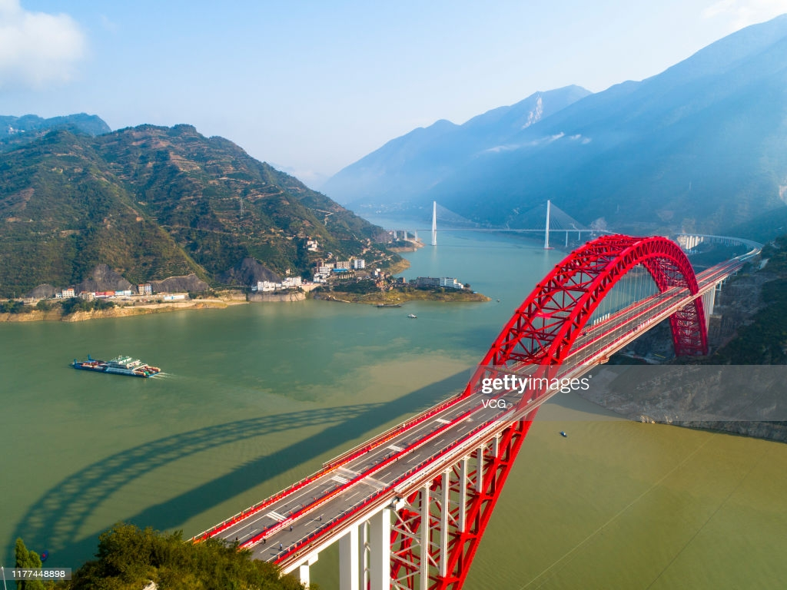

The Great Outdoors
Wander often.Wander always.
Explore the World
We seek to provide thr most authentic content from athletes,adventures,
explores and travellers around the world.Our long-term mission is to educate,
inspire and enable all problems to experience & protect wilderness.

Naeroyfjorden
NORWAY
Anlelope Canyon
UNITED STATES

Grossglockner
AUSTRIA
SEE MORE >
The Journal
Our favourite stories about public lands and opportunities for you to get
involved in protecting your outdoor experiences.

MAY 30,2017
An Unforgettable
If you only have one day to visit Yosemite National Park
and you want to make the most out of it.

MAY 28,2017
Symphonies in steeel
Crossing thr Golden Gate Bridge from San Francisco,you
arrive in Marin even before landing on solid ground.